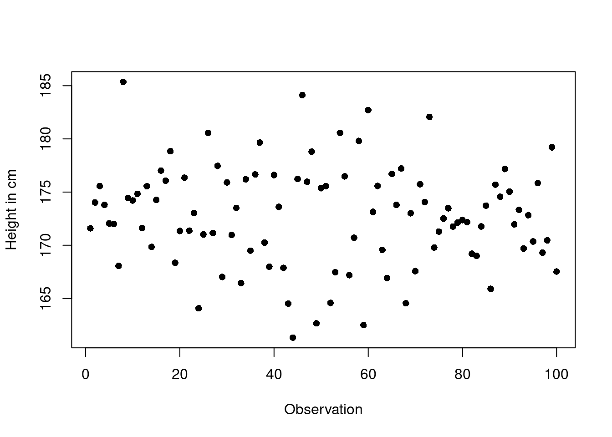

In this chapter we will learn how to summarize and communicate lots of data. Most datasets you will be working with in statistics are large and can contain thousands or even millions of observations. To understand these data and their pattern of variation you need tools to summarize them in a meaningful and informative way. In this chapter you will learn the tools to do so.
We first discuss a graphical tool to summarize the variation in a single variable by organizing the data in a way that shows us a the distribution of these data. This tool is called a histogram and you will encounter it very often across all applied data work and across all of statistics. To get a good understanding how to construct and work with a histogram, we first work with an example you can in principle do without a computer. This is useful to understand the basic principles of constructing and reading a histogram.
You will also learn to summarize large datasets by single numbers that provide information about the central tendency of the values of a variable. The mean is such a number, used over and over in statistics. You will learn what a mean is, what it tells you and when it gives a meaningful summary about the center of the distribution of a variable.
For a summary of a large dataset by numbers, you need not only an idea of at which values of a variable the data are centered but also how much they are spread out around this value. Such a measure of spread is the standard deviation. Like the mean understanding and working with standard deviations is fundamental and will be encountered over and over again throughout the large field of statistics and applied work with data. You need to gain a good understanding of what the standard deviation is and how to compute it.
For larger datasets, which will be the usual case in practice, you will need to learn how to summarize and communicate the information about variables with lost of different values using the computer. This means in particular, that you need to understand how to read large datafiles from a given source, how to select and modify particular variables. You will thus learn some powerful tools from the R language that will help you to do so.
When you have worked through this unit you will be able to summarize large datasets graphically and numerically and understand what these measures tell you about the variation in the data, how they look like, what are the most typical values of the variables and how much they are spread out around these values. In this process you will power up your abilities to read, select and manipulate large data files and single variables using the R language. This will enlarge your abilities to work with data by a huge and important step.
When we analyze data, we usually have to look at lots of them. As a leading example, let us take the case of anthropometric data. These are data measuring height and weight of humans in a population.1. These data are usually gathered via large population survey like the Demographic and Health Survey, abbreviated DHS2
1 Anthropometry (This is a word with roots from ancient greek. In ancient greek anthropos means ‘human’, and métron means ‘measure’. Anthropometry thus refers to the measurement of the human individual. An early tool of physical anthropology, it has been used for identification, for the purposes of understanding human physical variation
2 The DHS program, a US based program on demographics and health in various parts of the developing world. The data are used to monitor demographic and health developments to decide where policy action might be needed. The DHS website can be found here: https://dhsprogram.com/
What’s the point of recording the height and weight of humans? First of all, human growth depends on good nutrition and the availability of medical services to effectively treat illness. Thus human height in a population has for a long time been a subject of study. The average human height in a population varies with the general living standards. This fact makes data on human height especially interesting for historians who study the history of living conditions. Because humans tend to get taller when they have good living conditions, human height can reveal some information on living conditions, height data can be an indirect measure of living conditions. This is especially interesting for periods when very little or no data were collected and recorded.
But also tody information about the distribution of height and weight in a population enables countries to make data-driven decisions and to monitor their progress in improving nutritional status and achieving the United Nation’s Sustainable Development Goals.3
3 The Sustainable Development Goals (SDGs) or Global Goals are a collection of seventeen interlinked objectives designed to serve as a “shared blueprint for peace and prosperity for people and the planet, now and into the future.” The goals were set and decided by the United Nations General Assembly and are monitored through various data collection efforts, including the DHS. The short titles of the 17 SDGs are: No poverty (SDG 1), Zero hunger (SDG 2), Good health and well-being (SDG 3), Quality education (SDG 4), Gender equality (SDG 5), Clean water and sanitation (SDG 6), Affordable and clean energy (SDG 7), Decent work and economic growth (SDG 8), Industry, innovation and infrastructure (SDG 9), Reduced inequalities (SDG 10), Sustainable cities and communities (SDG 11), Responsible consumption and production (SDG 12), Climate action (SDG 13), Life below water (SDG 14), Life on land (SDG 15), Peace, justice, and strong institutions (SDG 16), Partnerships for the goals (SDG 17). See also the website: https://sdgs.un.org/goals
The measurement of human height and weight are also important in the history of statistics. Especially important concepts describing the statistical relation between two variables, were detected in this context. We will learn about these concepts later, when we study the statistical tool of regression.
We will use a dataset from the DHS later in this chapter, when we discuss how to use R to deal with large datasets. The number of observations in this case is 2559. This is not very big but certainly too big to reasonably handle by hand. With a computer this becomes realistic.
But before we do so, lets look at a smaller example of human height data.
3.1 The histogram
To summarize data, statisticians often use a graph which is called a histogram. In this section we will discuss all you have to know about histograms and how to use them.
Seitwerk: Expand for reading comment.
Reda, I think it would be great that among the activities in the study center we collect some data about the students in the group. I would suggest height, weight. These varibles can be measured and recorded and the students could be asked to store these data in a text file, sow e can read them by R here. We could then use these data here to explain how a histogram is constructed or give it as an exercise.
3.1.1 Constructing a histogram
Since real world examples in this exposition come from anthropometry, let us look at a sample of 100 observations from a set of real world data about human adults of age 18 and above, where the data record their height in cm.4 I have stored these values in an R object which I called heights. So in this discussion I refer to the 100 vaues shown below as heights.
4 These data are collected from the internet. For details you can look at the source at http://wiki.stat.ucla.edu/socr/index.php/SOCR_Data_Dinov_020108_HeightsWeights
This is how R prints out the 100 height values. You already learned what the numbers in brackets on the left side mean. They are counters or observations. In total we have 100 values.
We start the construction of a histogram by choosing for the horizontal axes ranges of numerical values - in our case of the height data - which are called bins or classes. There is no fixed rule as to how to choose the size of these ranges. These ranges should neither be too fine, nor too coarse. While there are lists of mechanical rules, which you can for example find on Wikipedia5, it is usually best to use your domain knowledge and some experimentation to find out the bin size that works best for your data.
5 See https://en.wikipedia.org/wiki/Histogram#Number_of_bins_and_width
For this example, assume we had chosen a bin size of 5 cm. When you study the list, you will find that the lowest value is at 160.12 cm while the highest value is at 185.16. This is already quite tedious to find out by eyeballing the numbers with the small number of values we have chosen for this example. It is impossible to do for really large data sets.
Now lets make a distribution table like this:
Height-bin
Frequency
160 - 165
7
165 - 170
20
170 - 175
39
175 - 180
28
180 - 185
5
185 - 190
1
In the column Height-bin we have recorded the bins in steps of 5 and in the right column, Frequency, we have recorded the count of values that are in this bin.
When we make such a tabulation we have to agree on an endpoint convention. This is important, since when a height value would for instance be measured as exactly 165, in which bin should it be counted: 160-165 or 165-170? You, the constructor of the histogram, has to take this decision. Let us agree on the convention that when a value falls exactly at the endpoint of the bin, we put it in the next bin. In practice you will usually do a histogram by computer. The code of the computer program has to specify an endpoint convention, so the computer knows what to do when a value coincides with an endpoint.
On the Frequency axes you put the frequency scale: Counts of values. Then for each bin, you plot a bar, which has the width of the bin and the height of the frequency. Do this for all the bins you have tabulated and you are ready.
The histogram provides a certain aggregation of the data because it sorts the 100 data points into 6 bins, in our example. While loosing some local information on individual data points the global information conveyed by the summary gives us a pretty good idea of the overall pattern of variation on the human height data.
Seitwerk: Expand for reading comment.
Reda, I think it would be great if you could do some animation that reproduces the steps: Plot a height axis with bins from 160 to 190 in bin sizes of 5, then plot a frequency axes from 0 to 40 in steps of 10. Them from the list of 100 numbers, collect all that are recorded in the first bin and then make the height proportional to the count, then the next etc. The idea would be to realize something like my previous sketch for the Nile data
We can see, for instance, that the most frequent height is between 170 and 175 and that the variation is fairly symmetric around this bin. In the extremes this most frequent value can half or shrink even more, so there is quite some spread in the data.
If we had just plotted all individual data points, we would have got a picture like this.
Code
plot(as.numeric(heights), xlab ="Observation", ylab ="Height in cm", pch =16)

You will agree that as a summary of the data it is not particularly useful and not as informative as the histogram.
Histograms are such a common tool in statistics to explore the variation in one variable and the shape, how it is roughly distributed that every statistical software has functions to produce histograms.
In R, the language we use in this course, there is also such a function. The function name is called hist() and it takes the data as an argument. This is the second graphic function of R you encounter in this course after we played with the barplot()function in the last lecture.
To produce a histogram from the height data with R, we type at the console
hist(heights)
Now you try
Let us check your understanding of histograms by a little quiz now. The histogram below shows the distribution of the final score in a certain class.
Which block represents the people who scored between 60 and 80?
Ten percent scored between 20 and 40 about what percentage scored between 40 and 60?
About what percentage scored over 60?
Final Score
Seitwerk: Expand for reading comment.
Reda, I think it would be great if you could redo the graphics with computer. I have these hand drawn graphs only because I did not have enough time to play around with computer graphics and because I wanted to experiment how such pictures would look like. I think a computer graph would be better.
3.1.2 The relative frequency scale: Absolute versus relative frequency
Sometimes it might be useful, to choose a different scale for the y axes of your histogram. Instead of absolute frequencies (or counts) it might be useful to show relative frequencies, the proportion of occurrences in each bin. The type of scale you choose will depend on what kind of comparisons you want to emphasize about your data.
Assume you would want to draw your histogram such that on the y-axis you do not see the absolute counts of how many individuals in your data fell into a certain hight bin but you want to see instead these numbers as a percentage of the whole dataset.
This is sometimes convenient and in some cases more informative. This choice of a different scale is called the relative-frequency-scale. The construction of the histogram follows the same principles as we have already discussed but now we just quantify the counts in the bins differently as shares of all observations.
Let’s do the histogram for the heights data in a relative frequency scale. In our table, which we used to construct the histogram before we had in total 100 observations. A count of 7 is therefore 7 % or 0.07 in the relative frequency scale etc. Thus our table would now be:
Height-bin
Frequency
160 - 165
0.07
165 - 170
0.20
170 - 175
0.39
175 - 180
0.28
180 - 185
0.05
185 - 190
0.01
and the histogram in relative frequency scale would look like this:
Unfortunately R has no standard argument to its hist()function to draw a histogram with a relative frequency scale. To produce a histogram like shown here we would need some more advanced coding than we know at the moment.6 I will come back to explain how to do a histogram with relative frequency scale in R as soon as we have learned the appropriate syntax to implement this.
6 The hist() function in R has an argument, called freq. It can take the value TRUE or FALSE. If the argument is set to FALSE the histogram is shown such that the y axis has yet another scale, the so called density scale. This scale is chosen such that the total area of the histogram is 1.
3.1.3 Best practices for histograms
When you summarize lots of data by a histogram there are some things you should consider carefully. Let us go through the most important best practice principles for histograms.
3.1.3.1 Bin size
When doing exploratory data work it is usually a good idea not to look at a single histogram but at several histograms of the same data by changing the bin size. There is no clear rule about the optimal bin size. It often depends on context and field knowledge.
If the bins are to fine, then the data will be be very noisy and give no overview because they show too many individual points. On the other hand if the bins are too wide, they will not show you the overall variability in the data very well and you fail to get a good idea about the distribution.
Let us illustrate this point using our heights data.
In the first case we have chosen 100 bins, which is too fine. There is almost one bar for every single data point. In this way we have a lot of spurious peaks and throughs and can not see the variation pattern in the data very clearly
Here the histogram is too coarse and we do not see the variation pattern either.
The computer usually has a built in rule of thumb for the histogram which will work well in most of the cases. Still for individual datasets it is sometimes better to choose a different bin size that more adequately mirrors the variation in the data.
3.1.3.2 Choose boundaries that can be clearly interpreted
Tick marks and labels should fall on the bin boundaries. As in the examples discussed so far, they need not be there for every tick but it is enough if they are there between every few bars. Bin labels should also have not many significant digits, so they are easy to read. So bin sized which divide 10 and 20 evenly are easier to read than bin sizes that do not. So always take caution not to arbitrarily split bin sizes. Otherwise you can end up with off bin boundaries.
For example, if we just took the maximum and the minimum of the heights data and arbitrarily divided them into 7 bins, we would get the difficult to read bin boundaries
3.1.3.3 What’s the difference between a histogram and a bar chart?
A histogram depicts the frequency distribution of a continuous, quantitative variable, such as height, weight, time, energy consumption etc. These are variables that can take on any value and these values can be ordered from smallest to highest.
When we have a categorical variable, like we encountered them in section 2, we need to use a bar chart. The bars of the bar chart typically will have a small gap between the bars, emphasizing the discrete nature of the variable. The categories in a bar chart usually have no natural ordering. As we discussed in section 2, we have even to be conscious how we display the categories to avoid suggesting an order that is in fact not there in the data.
3.2 The average and the standard deviation
With a histogram we can summarize a large amount of data and get some insights about the variation in the data. Often we can summarize data much more drastically by just one number describing the center of the histogram and the spread around this center. When I write center an spread here, these are just ordinary words with no special technical meaning.
When we do statistics we need precise definitions and we will study and learn these definitions in this section. The average is often used to find the center. Another measure to find the center is the median. The standard deviation measures spread around the average. The interquartile range is another measure of spreads.
Before we go into these definitions, let me show for a start two histograms, both have the same center, but the second one is more spread out, there are more observations farther away from the center.
(a) Histogram 1
(b) Histogram 2
Figure 3.1: Histogram 1 and Histogram 2 have the same center but Histogram 2 is more spread out
These distributions can be summarized by the center and the spread. But what about a situation like this?
Figure 3.2: A bimodal distribution
In some cases such distribution can occur naturally. Think, for example, about the distribution of the elevation data of surface area of the earth. Most of the surface area of the earth is taken by the sea floor at about three miles below the sea level or the continental planes around sea level. If we would report only the center an the spread of this histogram, plotted in the picture as the red and blue vertical lines, we would miss these peaks.
3.2.1 The average
Let us come back to the height data, we have analyzed in a histogram before as the context for which we study the concept of an average.
Average
The average of a list of numbers is defined as their sum, divided by how many numbers their are in the list.
By now it will be no surprise for you that R provides a function for computing averages. This function is known by the alternative name for the average, called the mean.
Here is how you would compute the mean using R.
mean(L)
[1] 2.8
which is indeed what we should get as a result.
Let’s go back to the issue of human height data and take our data set of 100 observations of the height of adult humans. Let us recall our histogram and give it some nice title and a precise label for the x-axis:
hist(heights, xlab ="Height in cm", main ="Height of 18 year old humans")
The distribution looks symmetric. If we summarize these data by taking an average in one number we will capture the center of the distribution fairly well. Let us compute the average, using the mean function.
average_height <-mean(heights)average_height
[1] 172.8044
The average height in this dataset is about 172.8044426 cm. The average is a very powerful way of communicating data by compressing many observations into one single number, the mean.
This compression is, however, only achieved by loosing some information on individual differences. For example in our dataset the average height is 172.8044426 cm.
But there are about 6 % who are larger than 180 cm and there are also about 7 % who are smaller than 165 cm. With 100 individuals these are individuals who are beyond these thresholds. This diversity is hidden in the aggregation.
How to compute percentages of observations that fulfill a condition.
This is a good opportunity to show you a cool feature or trick in R how we could in one line compute such percentages. Assume we want to compute the percentage of individuals in our data who are larger than the mean of 172.8044426. How can we do this?
Logicals are a powerful data type to make such a computation. A logical is a special data type, similar to the data type numerical, used for representing numbers, or the data type character, representing strings. A logical can either be TRUE or FALSE and will be the output of an R operation testing a condition.
Say we have 10 numbers, given by
x <-c(4,5,1,2,4,2,0,10,11,6)
Now we could ask R which entries of x are larger than 2 by typing
The output is a vector of logicals where R compares each entry in xwith 2 and if it is larger it returns TRUE and otherwise FALSE (this includes all entries which are exactly 2).
Note that, when you apply the function mean() to a vector of data of type logical R performs a computation by coercing TRUEto the number 1 and FALSE to the number 0. We will learn about the details of these R the coercion rules later in more detail. If you apply mean() to x you will get the proportion of values fulfilling a certain condition. So if you take the mean of
When you take the mean \[\begin{equation}
\frac{1+1+0+0+1+0+0+1+1+1}{10}
\end{equation}\] you just get the proportion of 1, i.e. cases where the condition \(x > 2\) is TRUE, because the 0-es do not contribute to the value of the sum, only the 1-s.
This insight can be used to compute the percentage of values that fulfill a certain condition in R. Here the proportions of heights larger and smaller than the mean.
mean(heights >mean(heights))
[1] 0.52
mean(heights <mean(heights))
[1] 0.48
Here you see the symmetry of the distribution numerically. About 50 % are larger and also smaller than the mean.
3.2.2 The standard deviation
When summarizing and communicating lots of data, it is useful not only to report at which value the center of the distribution is. It is often helpful to also think about the way how the values spread around the average. The quantity which measures this spread is called the standard deviation. It can be interpreted as an average deviation.
Le us go back to our data on human height. There were 100 observations in our sample. The average height was 172.8 cm.
This average tells us that most of the humans measured in the sample had a height of around 1 m and 73 cm. But there were deviations from this average. Some humans were taller and others were smaller. We can ask how big these deviations are? In answering this question we need the concept of the standard deviation.
Standard deviation
The standard deviation says how far away numbers on a list are from their average. Most entries on the list will usually be somewhat around one standard deviation from the average. Very few will be more than two or three standard deviations away.
In R you can compute the standard deviation by using the function sd(). So let us compute the standard deviation of our height data using the sd()function.
sd(heights)
[1] 4.726364
The standard deviation is at about 4.73 cm. That means that many humans differed from the average height by about 1, 2, 3, 4 or about 5 cm. Let us use R to compute the percent of observation that are within one standard deviation from the average.
Let us compute the percentage of observations, which are within 1 standard deviation from the mean height. Do you remember the trick with using logicals?
Let us compute the percentage of observations which are larger than the average height minus und standard deviation and smaller than the average height plus one standard deviation. The R symbol for and is &. Let us use it to formulate the condition:
Sometimes it is convenient to subtract the mean from every observation and and express the units in terms of standard deviations. By construction this is a variable with mean 0 and standard deviation 1. This is called standardization or normalization. Let me show you how this works.
We transform our heights data to \[\begin{equation*}
z_i = \frac{x_i - \mu}{\sigma}
\end{equation*}\] and compute the mean of \(z_i\) and its standard deviation. We can use R to do that:
z <- (heights -mean(heights))/sd(heights)mean(z)
[1] 2.699057e-15
sd(z)
[1] 1
Now you see that the mean is 0 and the standard deviation is 1. The mean in the R computation is not exactly 0. R says it is 2.699057e-15. What does this mean? This is a way of writing 0.000000000000002699057 in a special notation. Do not worry for now how this notation works exactly. What you can see is that this is an very very small number, practically the same as 0. In R it is not exactly zero because of rounding errors of the computer. For practical purposed the value is as good as zero. This must be the case as a consequence of how we changed the units. The mathematically inclined among you might try to derive this fact more generally using the definition of the mean and the standard deviation.
Now if we ask the same question as before. Which proportions of \(z\) are within -1 and + 1 standard deviation from the mean, we get
Code
mean(z >=mean(z) -sd(z) & z <=mean(z) +sd(z))
[1] 0.71
This is exactly the same value as we got before. Our transformation was just about changing the units in which our data are measured. This change of unit does not change the distribution. So no matter whether we work with \(x\) the original heights in cm or with the \(z\) the normalized data, the distributional properties do not change. In statistics if data are normalized in this way the normalized values are also often referred to as the z-score.
3.2.3 Computing the standard deviation
Usually we will compute the standard deviation using the computer and only in rare cases will we ever compute a standard deviation by hand. Still it is important that you understand how the computation works and what is actually been computed. Here is how.
Example 1: Find the standard deviation of the list 20, 10, 15, 15
Step 1: We first need to find the average, which is \[\begin{equation}
\frac{20 + 10 + 15 + 15}{4} = 15
\end{equation}\]
Step 2: We next need to find the deviation from the average. In order to do so, we just subtract the average from each entry \[\begin{eqnarray}
(20-15)&=5\\
(10-15)&=&-5\\
(15-15)&=&0\\
(15-15)&=&0
\end{eqnarray}\]
Step 3: Now we have to square each one of these differences and take the square root, which is often called the root mean square
The standard deviation has the same units as the data. For example, when we measure height in cm then at the squaring step the units change to \(cm^2\) but the squre root returns \(cm\) again.
Now you try
Guess which of the following two lists has the larger standard deviation. Check your guess by computing the standard deviation for both lists.
9,9,10,10,12
7,8,10,11,11,13
Can the standard deviation ever be negative?
For a list of positive numbers can the standard deviation ever be larger than the average?
3.3 Bigger datasets and more R
When we use the computer to summarize and communicate lots of data we need to get to know more of R. In particular we need to understand how to read data and select and manipulate variables. Let me lead you through some of the most basic concepts you need to know in order to do so. Finally we will apply our new skills to the hand on analysis of a real world anthropometric dataset from the DHS survey that help us to get a global picture about the nutritional situation for children and how this information could support us in setting policy priorities.
3.3.1 Vectors and indices
Say that for some reason we would be interested in the 50th observation in our data on human height. How would we tell R to select this observation from our data?
Individual elements can be accessed by using an index or a set of indices. The index is specified by using brackets []. For example
heights[5]
[1] 172.0488
gives the 5th element of our heights data. You can go to the beginning of this chapter to verify that we have indeed captured this element. 5 is the index in this example. To capture the 50the element, we would type
heights[50]
[1] 175.3654
A very important function in R is the c()function. c is short for concatenate and this is what the function does. It builds a vector putting several numbers together in one R object. In this way we can write down several indices at once and tell R for instance to read the 4th, the 40ies and the 67th element from our heights data like this
heights[c(4,40,67)]
[1] 173.7980 176.6037 177.2146
3.3.2 Selecting more than one observation
Sometimes we need to retrieve consecutive numbers. For this case we need another function, the colon operator or :. It helps us to build sequences of conscutive numbers.
For example
heights[c(2,3,4)]
[1] 174.0172 175.5666 173.7980
is the same as
heights[2:4]
[1] 174.0172 175.5666 173.7980
Say we wanted to know the average height and the standard deviation of the first 50 observations in our data we could tell R to compute this by
mean(heights[1:50])
[1] 173.0988
sd(heights[1:50])
[1] 4.99029
Another very powerful and useful function we will need often in data analysis is the lenght()function of R. It gives us the number of elements in a vector. Let’s check this with heights()
length(heights)
[1] 100
which gives us the answer to be expected.
3.3.3 Logical subsetting, coercion rules and recycling
As we already learned in the context of computing proportions of values fulfilling a certain condition by using logicals and the coercion rules of R before, we can do similar things by composing different functions.
Assume we want to know the number of observations with a height larger than 180 cm. This could be computed by typing
sum(heights >180)
[1] 6
You already know how this works. In the parentheses is a comparison. In this comparison R checks for each entry in the vector heights whether it is larger than 180 or not. For each observation where this is the case the output is TRUE and otherwise FALSE.
But how can such a comparison work? After all heights is a vector with 100 entries and 180 is just one number. A vector can not be compared to a number. Here some feature of R comes into place which is called recycling. R makes heightsand 180 similar by extending 180 to a vector with 100 of the same element 180 and then compare component by component resulting in a vector with 100 logicals (i.e. TRUE or FALSE).
When the vector of logicals is given to the sum()function another internal rule of R is applied, which is called coercion. In this case R transforms in the background automatically the TRUE values into 1 and the FALSEvalues into 0. As a result you will get the sum of all cases where the condition is fulfilled.
A related and also very useful function is the which()function. With this function you can find out the indices of the observations, fulfilling a condition
which(heights >180)
[1] 8 26 46 54 60 73
tells you that the elements 8 26 46 54 60 73 were larger than 180. And what were the values of these 6 observations? Now you know already. It is
Data Frames are the next R workhorse when we deal with data. A data frame is a rectangular table of data where every row corresponds to one data point.
Instead of using just some data frame let us this time use a real world example of anthropometric data from the DHS. Anthropometric data can help a country to get a data driven picture on the nutritional status of its population. These data can help identify areas where policy action is needed.
3.3.4.1 DHS data on the nutritional status of children under 5 years
In the analysis we are going to produce a statistical table on the nutritional status of children under five years. The anthropometric data reveal information about a persons nutritional status. The nutritional status of children is observed to monitor and measure malnutrition. The nutritional data of children are included in the United Nations development goals indicators. They encompass children’s sex, age, height-length, and weight. The nutritional indicators are sex and age specific because boys and girls grow at different rates. Their growth rates are also age dependent.
Four indicators on nutritional status are collected in DHS surveys:
Overweight: This indicates high weight for height and is a measure of excess weight. This results from an imbalance of energy consumed (too much) and energy expended (too little). Children with this condition have an increased risk of non-communicable diseases, such as high blood pressure and diabetes and is associated with increased risk of being obese and overweight in adulthood.
Stunting: This is low height-for-age. It is a measure of growth faltering and may result from a deficient growth environment, recurrent infections, chronic diseases and other causes. It is associated with impaired brain development and reduced academic achievement in childhood and lower economic potential as an adult.
Wasting: Is low weight-for-height and is a measure of acute weight loss. This may result from inadequate food intake or from illness or infection. With this condition children are more susceptible for disease and have a higher risk of death.
Underweight: Is low weight-for-age and is a measure of weight relative to a child’s age. It reflects children who are stunted or wasted or both.
The World Health Organisation (WHO) child growth standards provide a single international standard that describes the physiological growth for all children from birth to age 5. The measurements of individual children are compared to the WHO Child Growth Standards to assess each child’s growth. The WHO Growth Standards for children use a distribution that is expressed in units of standard deviations from the mean, also called z-scores. It is a distribution with a mean 0 and standard deviation 1. Within 1 standard deviation are about 67 % of all values, within 2 standard deviations it is 95 % and within 3 standard deviations 99.7%. Height for age, weight for height, and weight for age of children are expressed in these units.
Statistical cutoffs are used to measure malnutrition. If a child’s height for age is below minus two standard deviations from the mean (expressed in z-scores), the child is considered stunted. If it is below minus three standard deviations from the mean it is considered severely stunted. If the weight-for-height z-score is below minus 2 standard deviations from the mean the child is considered wasted, if it is below three standard deviations from the mean it is considered severely wasted. If the weight for height z-score is above two standard deviations from the mean the child is considered overweight, if three standard deviations above it is considered obese. If the weight for height z-score of a child is below two standard deviations from the mean it is considered underweight, if three, severely underweight.
The WHO uses the following prevalence thresholds to assess the problems of stunting and wasting in a population of children:
WHO Prevalence thresholds for height and weight
Classification
stunting
wasting and overweight
very high
30% or more
15 % or more
high
20 - 29 %
10 - 14 %
medium
10 - 19 %
5 - 9 %
low
2.5 - 9 %
2.5 - 4 %
very low
Less than 2.5 %
Less than 2.5 %
Prevalence is the proportion of a population who have a specific characteristic in a given time period. In a survey prevalence is measured by the number of people in a sample who have the characteristic divided by all people in the sample.
Let us go now into the actual data and learn how to use the computer and R as a tool.
3.3.4.2 Reading the DHS data from a file
Before we can do anything with data, we need first to learn how to load data into R and how to save them. We will discuss now how to do this for the case of comma separated text files or so called csv files. Data are very often provided in csv-format. It is one of the most common data formats for publicly available data.
R provides functions for reading and writing from almost any other format, like data stored in raw text files, in Excel files and many more data formats that are used today. Since in all those different formats are read by R following the same principles as in the csv case, it is sufficient if we discuss here the the case of csv files only.
To read a csv file, R provides the function read.csv(). If the csv file comes with a European instead of an US decimal format (, instead of . for the decimal sign.) you need to use the function read.csv2(). Please check out the documentation of these functions by typing ?read.csv at the R prompt.
In the simplest form you read the data and store them in an object you can work with in R. How to store data in an R object, we have already learned in the previous lecture. You invent a name and assign the values to this name using the assignment operator <-.
Let’s call the object in which we save our data dhs_data, then by calling the function read.csv() with the path to your file as an argument will read the data from your local folder and store them in the object we have created. The csv-data-file, we will need for our analysis is called children_nutrition_data.csv7 This allows us to refer to the data for doing further computations.
7 I have prepared this file from the raw DHS data file. This needed many steps, some of them advanced and would be to complex to discuss in detail at this step.
The function needs as an argument the file name. If the file is in a sub-folder of the current directory you need to also specify the path. The path is described to R as a string of characters. Therefore it needs to be put between “” symbols.
To specify the correct path to the file you need to know in which part of your directory tree you are currently working.
In my case I am working in the project folder for my lecture notes, which has a sub-folder called data. The data sub-folder has a further sub-folder called DHS in my case and thus I specify the path relative to this location.
To find out what is your current R working directory, R provides the function getwd(). If I type this in my case, I will get
getwd()
[1] "/home/martinsummer/R/Statistics_JWL"
the path of my project folder for this lecture notes. So if I type the string "data/DHS/children_nutrition_data.csv" this specifies the path relative to my working directory.
If you read the file on your computer, you need to specify the path appropriately from where you are working in R at the moment to where you have stored the csv file.
Now read.csv() has many additional arguments, which provide you with lots of flexibility. I encourage you to check it out and play with it using the help function and the examples given therein by typing ?read.csv at the prompt.
We have now read the main data file and written it to the R-object dhs_data.
Before we are able to see what is inside of this object and how we can access the data, let us first explain a few very basic R building blocks or data types.
3.3.4.3 Inspecting the data
A useful function to inspect a data object like the one we have just created is the dim() function. It will tell us how many rows and columns our dataframe actually has
dim(dhs_data)
[1] 2559 18
This means that our data have 2559 rows and 18 columns. Quite a bit larger than the heights dataset. Here we really need a computer to analyze the infortion contained in these data.
Another useful function to inspect data is the heads()function. It displays by default the first 6 rows of the dataframe
Since there are 18 variables not all of them can be displayed on a single page-width. R stacks the information in blocks. We see that some columns are numerical, some are characters and some are logicals. The variable names give already some clues about what they mean. For the exact meaning we would need some form of documentation.
3.3.4.4 Analyzing particular variables and subsets of data
Dollar signs $ are used to adress individual columns. For example, assume we would like to count the number of boys (i.e. sex = male) in our sample we could use this together with R’s coercion rules by coding
sum(dhs_data$sex =="male")
[1] 1256
sum(dhs_data$sex =="female")
[1] 1303
Observe a few things here: Operationally we have applied the tricks we have learned about using logicals to count up cases for which a condition is true. The variable sex in our data is coded by strings of chracters. We therefore need to put these strings into " " quotation marks in the comparison. Note also that the identidy sign in R is ==. The symbol = in R is an assignment operator, which we can only use to assign values to arguments in a function.
Indices in a dataframe are pairs specifying row and column numbers. For example
dhs_data[4,3]
[1] "9 - 11"
is the data point in the dataframe which is at row 4 and column 3. In this case it is a string of characters.
Remember
For any subset of a data frame d, we can extract whatever rows and columns we want using the format
d[the rows we want, the columns we want]
Soemtimes dataframes do not have column names. Still we can apply functions to the vector of a column using indices. For example we could compute the mean of the variable nt_ch_wazas
mean(dhs_data[ ,18])
[1] -0.7392497
Note the expression [,18]. Since there is a 18 in the second position, we are talking about column 18. And since the first position, before the comma, is empty, no rows are specified — so all rows are included. That boils down to: all of column 18.
A powerful feature of R is that we can extract data from a dataframe using the same logic as we used when extracting data from a vector.
For example the follwoing code extracts variables 1, 3 and 5 and prints the first four values of them
Note that in a dataframe all columns must have the same length. But as in our dataset, every variable can contain a different data type, like numbers, characters or logicals.
Now let us analyze the prevalence of children in our dataset that are wasted. Before we do that let us explain that the data contain a variable, which is called wt. This is short for weight. It means that each row is not counted as one observation but is weighted. The sum of the weights
sum(dhs_data$wt)
[1] 2494.102
would then give us the total number of children in the sample. Let us not go into the details of where these weights are coming from and why they are needed at this stage. The variable that encodes stunting is nt_ch_stunt and the variable that encodes wasting is nt_ch_wast.
Now let us do the computation using the rules we have learned so far:
The proportion of stunted children in our sample is 39.5 % and the proportion of wasted children is 10 %. Thus according to the WHO classification the prevalence in stunting is very high and the prevalence in wasting is high.
We could use our new knowldge to answer other questions. Assume we would want to find out which of our regions has the highest proportion in stunting?
First, let us find which rows refer to region 1, region 2 etc.
So we see that region 2 has the highest prevalence in stunting.
Often we want to extract data that fulfill more than just one condition. For instance when we want to filter the values of a variable that fall in a particular interval we need the values that are larger or equal to the lower bound of this interval and lower or equal to the upper bound of the interval.
3.3.4.5 Combining several conditions
R allows us to combine conditions by logical operators. Assume we want to know the proportion of children in our data that are wasted and stunted. In this case both conditions need to be fulfilled. This would be coded in the following way:
Let me explain. The condition that a child is both stunted and wasted means that the stunting variable evaluates to TRUE and the wasting variable evaluates to TRUE. If this is the case (dhs_data$nt_ch_stunt & dhs_data$nt_ch_wast) is TRUE. If one of these variables evaluates to FALSE then (dhs_data$nt_ch_stunt & dhs_data$nt_ch_wast) is FALSE.
We can do this with other logical operators. We can ask for example what is the proportion of children who are wasted or stunted. The operator here is | and (dhs_data$nt_ch_stunt | dhs_data$nt_ch_wast) evaluates to TRUE if the first condition is TRUE or if the second condition is TRUE or if both are TRUE. Let’s do the computation:
In this chapter you have learned how to summarize and communicate lost of data. As an application context we have chosen measures of height and weight, or anthropometric data.
You have learned how to summarize data graphically by a histogram, how to construct a histogram and how to display the histogram with different scales: With absolute and relative frequencies.
You have learned to plot histograms in R and learned about things to care about when doing histograms, such as the choice of the bin size and choosing the boundaries of bins.
You have learned to summarize data by the mean and the standard deviation. You have learned what these numbers mean and how to compute them by hand and, when you have lots of data, by R.
You have learned new concepts in R that helped us to analyze a large dataset from the demographic and health survey by computing proportions of children suffering from certain physical conditions. In particular the new R concepts you learned were
Reading data from a file
Using indices to extract particular values from a vector.
Selecting more than one observation.
Logical subsetting, coercion and recycling rules of R
Data frames and how to work with them.
3.5 Exercises
3.5.1 Histograms
A histogram of monthly wages for part-time employees is shown below (relative frequencies are marked in parenthesis). Nobody earned more than $1000 a month. The block over the class interval from 200 to 300 is missing. How tall must it be?
2. Three people plot histograms for the weights of subjects in a study, using the relative frequency scale. Only one is right. Which one and why?
Code
#| echo = falselibrary(JWL)dat <- height_weightdata <- dat[dat$state ==1& dat$sex ==1& dat$age >18, ]hist_inf <-hist(data$height, plot =FALSE) # Store output of hist functionhist_inf$density <- hist_inf$counts /# Compute density valuessum(hist_inf$counts) *100png(file="pictures/hight_version1.png")plot(hist_inf, freq =FALSE, xlab =" ", ylab =" ", main =" ")png(file="pictures/hight_version2.png")plot(hist_inf, freq =FALSE, xlab ="hight (cm) ", ylab ="Percent per 5 cm ", main =" ")png(file="pictures/hight_version3.png")plot(hist_inf, freq =FALSE, xlab ="hight (cm) ", ylab ="5 cm per percent", main =" ")
(a) Version 1
(b) Version 2
(c) Version 3
Figure 3.3: Three versions of a hight histogram of males over age 18
An investigator draws a histogram for some height data, using the metric system. She is working in centimeters (cm). She wants to draw the histogram in a so called density scale, i.e. in a scale that the area of all the bars sum to 1. The vertical axes shows relative frequency and the top of the vertical axes is 10 percent per cm. Now she wants to convert to millimeter (mm). There are 10 millimeter to the centimeter. On the horizontal axis, she has to change 175 cm to ? mm, 200 cam to ? mm. On the vertical axis she has to change 10 percent per cm to ? percent per mm, and 5 percent per cm to ? percent per mm.
In a Public Health Service study, a histogram was plotted showing the number of cigarettes per day smoked by each subject (male current smokers), as shown in the histogram below. The density is marked in parentheses. The class interval include the right endpoint, not the left.
The percentage who smoked 10 cigarettes or less per day is around:
1.5% 15% 30% 50%
The percentage who smoked more than a pack a day, but not more than 2 packs, is around
1.5% 15 % 30% 50% (There are 20 cigarettes in a pack)
The percentage who smoked more than a pack a day is around
1.5%, 15%, 30%, 50%
The percent who smoked more than 3 packs a day is around
0.25 of 1%, 0.5 of 1%, 10 %
The percent who smoked 15 cigarettes per day is around
0.35 of 1%, 0.5 of 1%, 1.5%, 3.5%, 10%
Figure 3.4: Number of cigarettes
3.5.2 The Average
Exercise 1:
The number 3 and 5 are marked by crosses on the horizontal line below. Find the average of these two numbers and mark it by an arrow.
Repeat (a) for the list 3,5,5
Two numbers are shown below by crosses on a horizontal axis. Draw an arrow pointing to their average.
Exercise 2:
A list has 10 entries. Each entry is either 1, 2 or 3. What must the list be of the average is 1? if the average is 3? Can the average be 4?
Exercise 3:
Which of the following lists has a bigger average? Or are they the same? try to answer without doing arithmetic.
10, 7, 8, 3, 5, 9 (ii) 10, 7, 8, 3, 5, 9, 11
Exercise 4:
Ten people in a room have an average height of 1.69 m. An 11th person is 1.96 enters the room. Find the average height of all 11 people.
Exercise 5:
Twenty-one people in a room have an average height of 1.68. A 22nd person who is 1.96 enters the room. Find the average height of all 22 people. Compare with exercise 4.
Exercise 6:
Twenty-one people in a room have a height of 1.68. A 22nd person enters the room. How tall would he have to be to raise the average height by 1 inch.
Exercise 7:
If you go back to figure Figure 3.2, where in the Histogram would be mountains? Where would you find planes? Where would the trenches in the sea floor show?
Exercise 8:
Diastolic blood pressure is considered a better indicator of heart trouble than systolic pressure. The figure below shows age-specific average diastolic blood pressure for men age 20 and over in a health survey from the US (HANES5 (2003-04)). True or fales: The data show that as men age, their diastolic blood pressure increases until age 45 or so. and then decreases. If false, how do you explain the pattern in the graph? (Blood pressure is measured in “mm” that is millimeter of mercury)
Exercise 9:
Average hourly earnings in the US are computed each month by the Bureau fo Labor statistics using payroll data from commercial establishments. The Bureau figures the total wages paid out to non-supervisory personnel, and divides by the total hours worked. During recessions, average hourly earnings typically go up. When the recession ends, average hourly earnings often start going down. How can this be?
3.5.3 The standard deviation
Exercise 1:
The socr_height_weight about the height and weight of 18 year old humans, we had used in the lecture before the average height in inches was about 173 cm and the standard deviation was about 5 cm.
One individual was 188 cm. He was above average by how many standard deviations?
Another individual was 174.66 cm. She was above average by how many standard deviations?
A third individual was 1.5 standard deviations below the average height. He was how many cm?
If an individual was within 2.25 standard deviations of average height, the shortest height for this individual would be how many cm? The highest height would be how many cm?
Exercise 2:
Here are the heights of 4 individuals. 150 cm, 130 cm, 180 cm, 172 cm. Match the heights with the description. A description may be used twice.
unusually short, about average, unusually tall
About what percentage of individuals in the data had heights between 170.2 and 173.2 ? Between 165.5 and 179.2?
Exercise 3:
Each of the following lists has an average of 50. For which one is the spread of the numbers around the average biggest? Smallest?
0, 20, 40, 50, 60, 80, 100
0, 48, 49, 50, 51, 52, 100
0,1,2,50,98, 99, 100
Exercise 4:
Each of the following lists has an average of 50. For each one, guess whether the standard deviation is around 1, 2, or 10. (This does not require any arithmetic.)
49, 51, 49, 51, 49, 51, 49, 51, 49, 51
48, 52, 48, 52, 48, 52, 48, 52, 48, 52
48, 51, 49, 52, 47, 52, 46, 51, 53, 51
54, 49, 46, 49, 51, 53, 50, 50, 49, 49
60, 36, 31, 50, 48, 50, 54, 56, 62, 53
Exercise 5:
Below are three sketches of three stylized histograms (we call them “sketches” because they display a schematic shape of a hypothetical histogram. This is why these sketches do not look like real histograms.) Match the sketch with the description. Some descriptions will be left over. Give your reasoning in each case. The symbol \(\approx\) is the mathematical notation for approximately.
One investigator takes a sample of 100 men age 18 - 24 in a certain town. Another one takes a sample of 1000 such men.
Which investigator will get a bigger average for the heights of the men in his sample? Or should the average be about the same?
Which investigator will get a bigger standard deviation for the heights of the men in his sample? or should the standard deviation be about the same for both investigators?
Which investigator is likely to get the tallest of the sample men? Or are the chances about the same for both investigators?
Which investigator is likely to get the shortest of the sample men? Or are the chances about the same for both investigators?
3.6 Computer exercises
Open the notebook exercises_summarizing_and_communicating_lots_of_data.ipynb and work on the exercises. Write your solutions into the notebook. You will need the computer to do this work.


 2. Three people plot histograms for the weights of subjects in a study, using the relative frequency scale. Only one is right. Which one and why?
2. Three people plot histograms for the weights of subjects in a study, using the relative frequency scale. Only one is right. Which one and why?